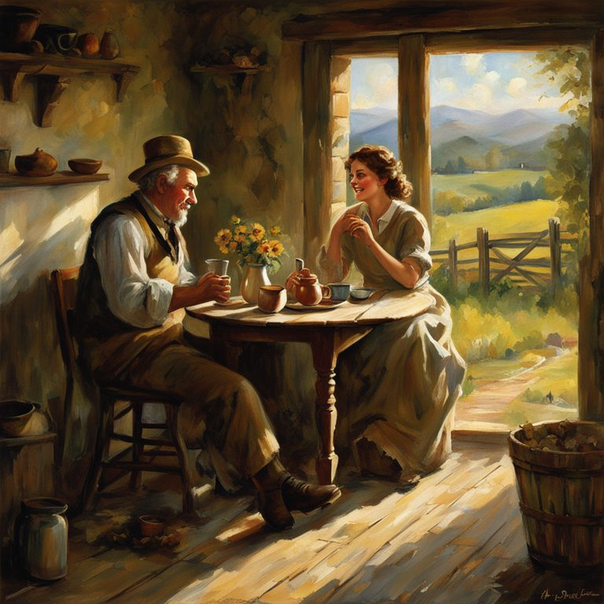
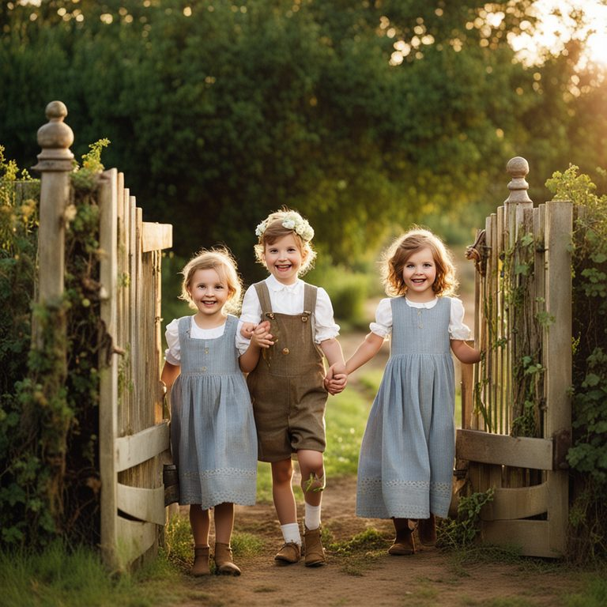
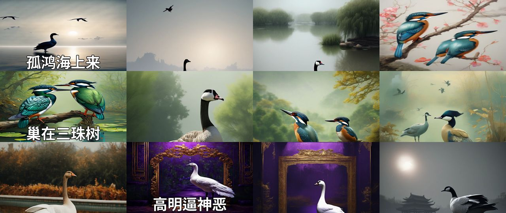

HKU · BASc Applied AI · Capstone (A+) → funded research · 2024–25
Teaching a machine to see classical Chinese poetry
A generative pipeline that turns a Tang poem into illustrated images, a subtitled motion video and recitation coaching for primary-school students. Text-to-image models take poetry literally. The core idea is an ontology step: four parallel LLM analysts break each line into subject, scene, time and mood before anything is drawn.
- +82%CLIP image–text score vs. baseline prompting, confirmed by human review
- 300+poems rendered to video as single-command batch jobs on HKU's GPU cluster
- 4parallel ontology analysts per line (GLM-4)
- 3outputs: illustrated stills, motion video, recitation feedback
Poetry says one thing and means another
Classical Chinese verse is compressed, allusive and figurative. Image models read words. Asking an LLM to translate a line in one shot gives a literal paraphrase. A few-shot prompt helps on the examples it was shown, then breaks on the next poem. These are lines from the poems on this page:
There's a second problem too: diffusion sampling is random, so even a perfect prompt can produce a bad image.
Understand first, then draw, then pick the best
Borrowing two ideas from retrieval research: RAG, by grounding each line in retrieved context (a translation, cultural-term readings and a whole-poem reading), and HyDE, by having the LLM write a hypothetical visual description and generating from that instead of the raw text.
- Split into half-lines
- English translation
- Cultural terms → concrete visuals (e.g. 渔父 → "an old fisherman on a wooden boat")
- Whole-poem scene, light and mood
- Parse the slots
- Assemble: featuring · with · in · under · creating · colour · style
- Carry subjects across lines for continuity
- SDXL base + refiner, 1024²
- N samples per line; CLIP ranks them; keep the best
- Bayesian optimisation of guidance scale (7–12) per line
- SVD-XT animates each still; SDXL img2img morphs between them; ffmpeg adds subtitles
Why parallel slots instead of one big prompt?
Few-shot examples were too rigid: they fixed the examples they showed and broke on the next poem. A schema generalises better. Each analyst has one narrow job and its own hard rules: list every physical object, with counts; if a moon is mentioned, it's night; turn feelings into visible poses. Narrow jobs are easier to check and fix one at a time, and the four analysts run concurrently rather than one after another.
Morphing between scenes
Transitions re-diffuse a cross-fade. Img2img strength peaks mid-transition, so the model repaints the most where the two images are most mixed. Drag the slider:
One poem, fourteen half-lines, fourteen images
Li Bai, 《下终南山过斛斯山人宿置酒》 (Coming down Zhongnan Mountain, I spend the night at the hermit Husi's, and he serves wine). Each line below shows the ontology slots the analysts produced, the packed prompt, and the image the pipeline picked. All of it is unedited output from one run.
An honest error analysis
The ontology step was a clear win, and the remaining failures can be traced to specific causes. My own qualitative read of the run above:
Root causes, traced from the logs

CLIP's text encoder stops at 77 tokens. When I re-ran its real tokenizer on these prompts,
8 of 14 lost traditional China, and on lines 12–14 it never saw the setting either. Best-of-N was then ranking on everything except the cultural constraint.
3 of the 4 misses fall in that group, which is suggestive, though 14 lines can't prove it.

The analysts were told never to write "not further described in terms of appearance or clothing". It slipped through anyway, along with a stray 森林. With no cultural anchor on "young children", SDXL's default prior took over.

Even when the whole prompt fits, CLIP rewards a literal match. On line 4, "gazing across lush greenery" let a bedroom with a window win. In the 感遇 video, 高明逼神恶 ("eminence invites the gods' envy") came out as an ornate purple palace. The concrete lines worked well: 双翠鸟 became a correctly drawn pair of kingfishers.
What I'd change next
- Front-load what matters. Put style and culture first, or score them as a separate CLIP query, so they can't be truncated.
- Use structured output. Have the analysts return schema-validated JSON instead of parsing free text with
startswith(), and reject on leaks. - Use a multilingual judge. CLIP is English-only and literal, so it measures agreement with our prompt, not with the poem. That's why the headline +82% was confirmed by human review.
- Add a figurative-line router. Detect metaphor or abstraction and switch to a symbolic depiction instead of a literal one.
- Fact-check the LLM. In the recitation guide, GLM-4 attributed 感遇 to Wang Zhihuan; it's by Zhang Jiuling. Author and title metadata should come from the database, not from the model.
Turning a recording into something an LLM can reason about
The second half of the project is a web app where children practise reciting. LLMs can't listen, so the audio is converted into a per-character feature table they can read. The four features (stress, duration, pause and pitch) follow guidance from a poetry-recitation researcher at EdUHK, and each is measured relative to the same speaker.
From waveform to features
- ASR with character timestamps: iFlytek at first, later swapped for Gemini 1.5 Pro
- Pause detection on RMS energy, after normalisation
- Pitch from the dominant FFT frequency (1024-sample window, 50% hop)
- Per-character table: volume, duration, pause and pitch levels
- Two LLM calls: an expert reading guide for the poem, then feedback comparing the student's table against it
Switching from a median threshold to an RMS-energy threshold, and lowering the threshold factor from 2.5 to 1.2, fixed missed pauses. Try it on a synthetic signal:
The reading guide (real GLM-4 output, translated)
Click a line. Highlighted characters should be stressed, and the gold bar marks the expected caesura for the five-character form.
From capstone to a funded role to a product decision
- Capstone, technical lead · graded A+Ontology prompting, the image and video pipeline, and the first recitation analysis.
- Funded research assistant, HKU Data Science Lab · Dec 2024 – Aug 2025Continued the project; built the web app with speech synthesis; scaled generation to 300+ poems as single-command batch jobs on the GPU cluster.
- HKSTP seed-funding pitchLed the technical preparation.
- Funding declined → wound downThe team reassessed the market and chose to stop. Knowing when to stop is a result too.
| Area | What it involved |
|---|---|
| LLM systems | Decomposed prompting, RAG/HyDE-style grounding, concurrent calls, caching, cross-line context |
| Generative vision | SDXL base + refiner, img2img transitions, Stable Video Diffusion, CLIP reranking, Bayesian optimisation |
| Speech / DSP | ASR alignment, RMS pause detection, FFT pitch tracking, feature engineering for LLM input |
| Evaluation | CLIP scoring with human review, error analysis down to the token |
| Engineering | Batch jobs on a shared GPU cluster, ffmpeg assembly, a Node/Express web app |